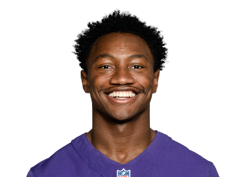

BALL KEEP
40 boards · Superflex · PPR · Sleeper
Player File · WR BAL

Zay Flowers
WR · BAL · 25 · Boston College
2026 · through Week 6
Counting stats
Yearly
| Year | G | Snap % | Touches | Tgt | Rec | Yds | TD | Rush | RuYd | ReYd | PPR |
|---|---|---|---|---|---|---|---|---|---|---|---|
| 2026 | 5 | 60.8% | 35 | 42 | 32 | 505 | 2 | 3 | 34 | 471 | 94.5 |
| 2025 | 17 | 86.0% | 96 | 118 | 86 | 1,273 | 6 | 10 | 62 | 1,211 | 243.3 |
| 2024 | 17 | 75.0% | 83 | 116 | 74 | 1,115 | 4 | 9 | 56 | 1,059 | 209.5 |
| 2023 | 16 | 84.7% | 85 | 108 | 77 | 914 | 6 | 8 | 56 | 858 | 206.4 |
Game by game · 2026
| Wk | Opp | Snap % | Touches | Tgt | Rec | Yds | TD | Rush | RuYd | ReYd | PPR |
|---|---|---|---|---|---|---|---|---|---|---|---|
| 1 | @ IND | 29.4% | 5 | 6 | 5 | 150 | 1 | 0 | 0 | 150 | 26.0 |
| 2 | vs NO | - | - | - | - | - | - | - | - | - | - |
| 3 | @ DAL | 32.8% | 6 | 6 | 5 | 104 | 0 | 1 | 20 | 84 | 15.4 |
| 4 | vs TEN | 73.4% | 8 | 10 | 8 | 118 | 1 | 0 | 0 | 118 | 25.8 |
| 5 | @ ATL | 81.6% | 9 | 9 | 8 | 66 | 0 | 1 | 13 | 53 | 14.6 |
| 6 | @ CLE | 87.7% | 7 | 11 | 6 | 67 | 0 | 1 | 1 | 66 | 12.7 |
| Total | 60.8% | 35 | 42 | 32 | 505 | 2 | 3 | 34 | 471 | 94.5 |
Regular-season line from Sleeper. Touches are carries plus catches. Yards are rushing plus receiving. Snap % is offensive snaps divided by team offensive snaps.
The tape
Zay Flowers is on the Hot board because the production already happened in a bad environment. FantasyPros' note is the plus in one line: new contract, 1,200 yards, historically run-heavy Ravens, new OC hope. Keep #47 is the long-board version of 'we notice.' The 2025 highlights are Flowers creating after the catch and forcing linebackers to miss.
If Baltimore's new coordinator even slightly opens the passing game, Flowers is a WR2 who you got at WR3 ADP. If they stay 2019 Ravens, he is a WR3 who still got 1,200 in the dirt. Either way, the Hot tag is about price, not about Flowers becoming Chase.
Plus
- Hot: FantasyPros cites a new contract, 1,200 yards on a run-heavy Ravens team, and new OC hope.
- Keep #47 with Yates still in the WR2/3 band - the cheapest true starter in Baltimore's passing game.
Minus
- Ravens remaining run-first is the structural cap; Lamar's rushing vultures scoring chances.
- Two-board Keep mix; this is a buy-the-dip ranking, not a seven-source WR1.
Board graph
Spread 26-64 · 36 sources
Every Board
Spread 26-64 · 36 sources
| Source | Rank |
|---|---|
| KeepTradeCut SF | 26 |
| Dynasty Trade Calculator | 31 |
| Mike Clay (ESPN) | 32 |
| Fantasy Life | 32 |
| Fantasy Points Superflex | 32 |
| FantasyPros ECR | 34 |
| Fantasy Footballers | 36 |
| Establish The Run | 36 |
| numberFire | 36 |
| PlayerProfiler | 36 |
| Rebuild board | 36 |
| RotoBaller Dynasty | 36 |
| PFF Dynasty | 38 |
| Rotoworld | 38 |
| Sleeper Superflex | 38 |
| 4for4 | 38 |
| DLF ADP mix | 38 |
| FantasyData Superflex | 38 |
| The Athletic | 39 |
| Yahoo Fantasy | 39 |
| Underdog ADP | 39 |
| FFToday | 39 |
| Contender board | 39 |
| Sports Illustrated Dynasty | 39 |
| Pro Football Reference | 39 |
| Dynasty Nerds | 40 |
| RotoWire | 40 |
| Footballguys | 40 |
| DLF Superflex | 41 |
| WalterFootball | 41 |
| Superflex market mash | 41 |
| CBS Sports | 42 |
| Fantasy Alarm | 42 |
| RotoGrinders Superflex | 42 |
| ESPN (Karabell) | 52 |
| PFN (Katz/Soppe) | 64 |
Tape · 2025 season
Zay Flowers 2025 Highlights
All player pages · The Keep · The Board · Recent deals · Hot 'n' Cold · BK News · Trade calculator